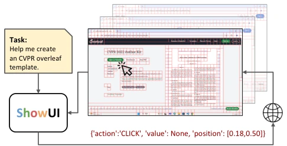
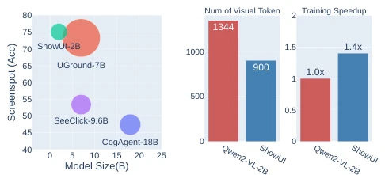
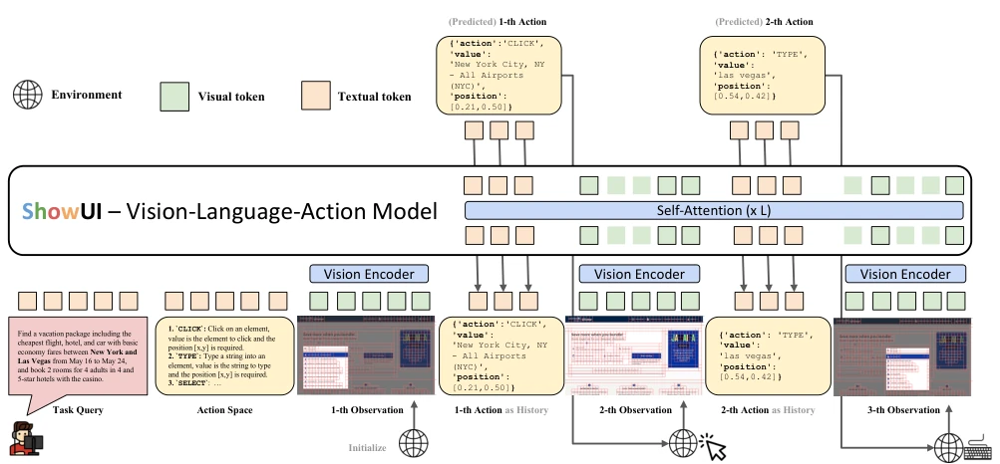
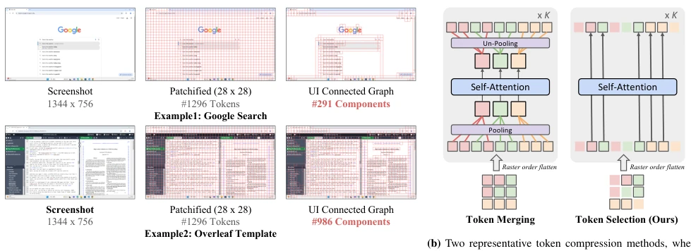
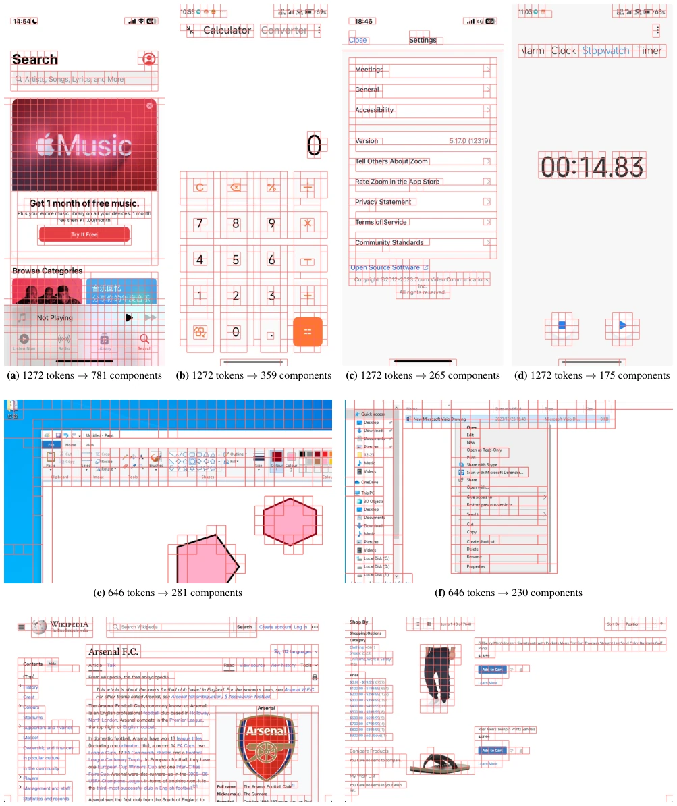
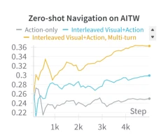
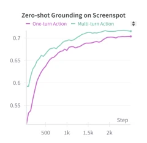
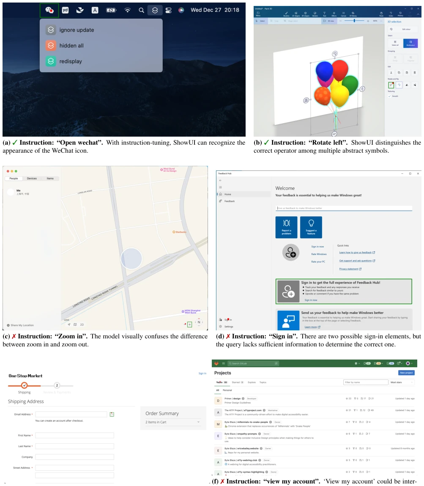
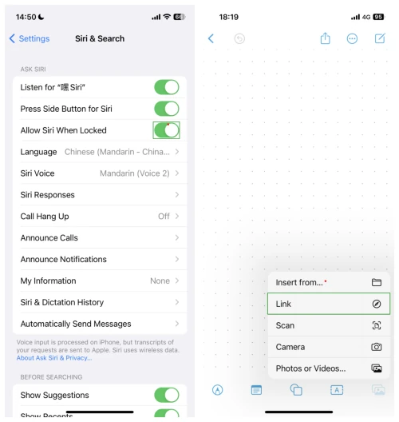
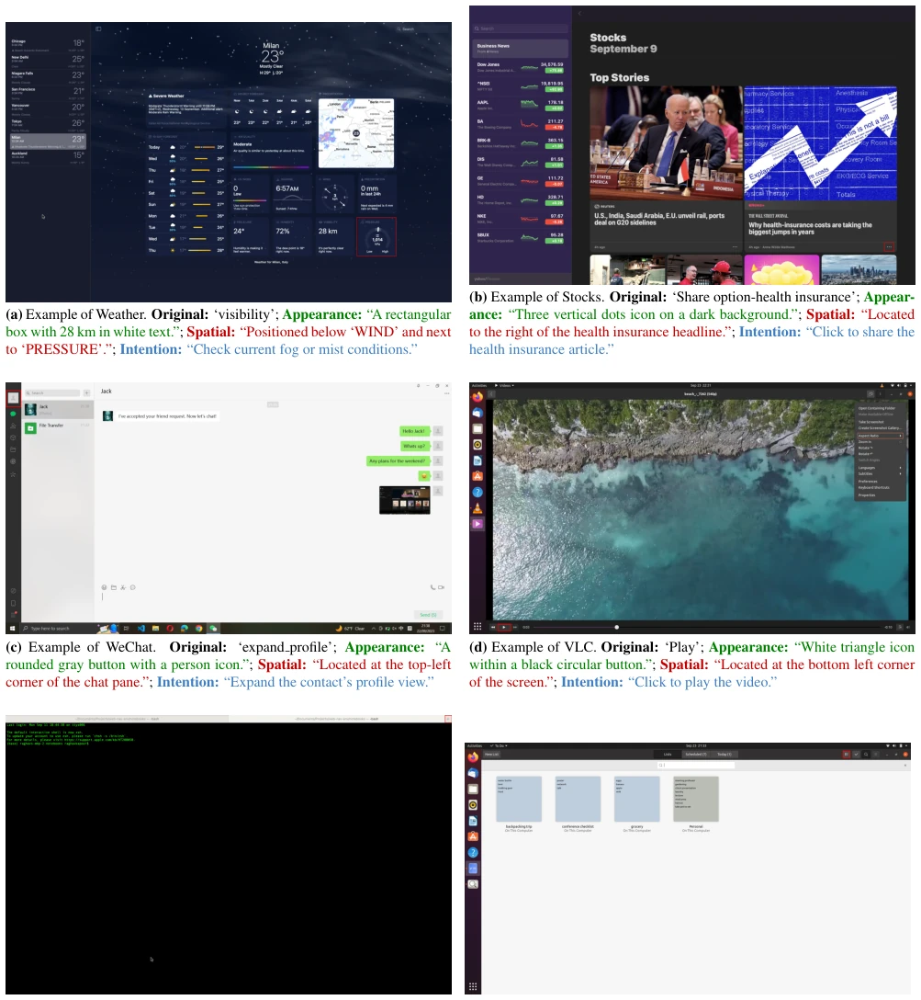

The name ShowUI is quite grand, is it really just "Show UI"? The 2B small model dares to compete head-on with the 18B CogAgent [17], relying on UI-guided Token selection to squeeze out the "water" from high-resolution screenshots. This trick is smarter than Token Merge, does not lose positional information, and trains 1.4 times faster. But do not get too excited, Zero-shot on MiniWob [40] is still outperformed by offline trained large models, indicating online RL is still a weak point. However, for those who do not want to rely on HTML closed-source APIs [12], ShowUI indeed gives pure visual Agents a bit of "human touch", and the 75.1% accuracy on Screenspot also proves small models can do big things. It is just that data cleaning is too labor-intensive, does GPT-4o assisted labeling count as "cheating"? Anyway, the results are here, a new benchmark for lightweight GUI agents, but still a distance from general Agents.
研究动机Motivation
现有 GUI Agent 大多依赖 HTML 或 Accessibility Tree [12]，就像让盲人看代码猜界面，跟人类看截图操作完全脱节。纯视觉模型又面临高分辨率截图 Token 爆炸问题，计算成本太高。动作空间也不统一，Web 的 Click 和 Mobile 的 Press Home 没法直接对齐 [36]。数据方面，Web、Mobile、Desktop 数据量级差异巨大，直接混合训练会导致模型偏科。ShowUI 想解决这些痛点，让模型像人一样直接看图操作，同时降低计算门槛，不再依赖闭源 API 或庞大的训练数据。此外，现有 VLM 缺乏对 GUI 动作的建模，难以处理多轮交互历史，这也是本文重点突破的方向。
Existing GUI Agents mostly rely on HTML or Accessibility Tree [12], like asking a blind person to guess the interface by looking at code, completely disconnected from humans operating based on screenshots. Pure vision models face the problem of high-resolution screenshot Token explosion, with computational costs being too high. Action spaces are also not unified; Web Click and Mobile Press Home cannot be directly aligned [36]. Regarding data, Web, Mobile, and Desktop data scales differ vastly; direct mixed training will cause model bias. ShowUI aims to solve these pain points, allowing the model to operate directly by looking at images like humans, while lowering computational thresholds, no longer relying on closed APIs or massive training data. Additionally, existing VLMs lack modeling of GUI actions, making it difficult to handle multi-turn interaction history, which is also the key breakthrough direction of this paper.

Figure 1. ShowUI is a Vision-Language-Action model for GUI Automa- tion. Given an environment screenshot, ShowUI efficiently processes it using UI-guided token selection for visual modeling and outputs an inter- action action within the loop.

Figure 2. Left: Zero-shot Screenspot grounding comparison between ShowUI and other GUI visual models in terms of model size and train- ing scale (area); ShowUI reaching state-of-the-art accuracy as well as the most lightweight model (2B) with a smaller training dataset (256K). Right: Building upon Qwen2-VL-2B [41], our UI-guided visual token se- lection reduces visual token redundancy by 33% during training, achieving a 1.4× speedup. . ing complex tasks through building agents [1, 13, 16, 56]. This progress inspires the development of intelligent GUI agents that can significantly streamline human workflows based on user intentions. Early efforts in GUI automation have primarily focused on developing language agents [12, 47, 55] that rely on closed-source, API-based LLMs like GPT-4 [32]. Th
Overall builds a VLA framework based on Qwen2-VL-2B [41]. 1. UI-Guided Token Selection: Divide screenshots into blocks, construct UI connected graph using RGB values, merge adjacent same-color blocks. During training, use Union-Find to identify connected components, randomly sample some Tokens, reducing redundancy while preserving positional information, more accurate than direct Merge. 2. Interleaved VLA Streaming: Design two stream modes. Action-Visual handles multi-step navigation history, alternating input of screenshots and actions; Action-Query handles single image multi-actions, improving data utilization. Actions unified as JSON format, paired with System Prompt to document action space. 3. Data Construction: Web data filters static text, retains visual elements; Desktop uses GPT-4o to enhance queries (appearance, space, intent); Mobile uses AMEX [8]. Adopt resampling strategy to balance data distribution across different devices, ensuring model generalization capability.

Figure 3. Illustration of ShowUI. Given a user task query, a pre-defined action space, and an initial screenshot as observation, ShowUI proceeds by executing the next action, updating the screenshot, and continuing in this cycle. Notably, ShowUI features the following key innovation designs: (i) UI- Guided Visual Token Selection, which processes the input screenshot to build UI patch-wise connected graph. During training, a random subset of tokens is selected within each component for efficient visual modeling (Sec. 2.1). (ii) Interleaved Vision-Language-Action Streaming to effectively handle past screenshots and actions, improving navigation performance. (Sec. 2.2).

Figure 4. Illustration of UI-guided Visual Tokens Selection. Left: Starting from an original screenshot (left) with a 28x28 patch grid (middle), resulting in 1296 tokens, the UI Connected Graph adaptively organizes the image into disjoint regions based on RGB values, allowing patches within the same region to be treated as redundant. Right: Comparison of two methods leveraging UI Connected Graph in visual token modeling: Token merging pools all tokens within one component, which loses individual positional information, while token selection, randomly sample part of tokens with each component, still retains their original position relationship.

Figure 5. Illustration of our method constructs the UI-connected graph based on the informativeness of screenshots. (a–d) Mobile; (e–f) PC; (g–h) Web.
On Screenspot [11], ShowUI achieves 75.1% accuracy with a 2B model, outperforming 18B CogAgent [17] and 9.6B SeeClick [11]. Navigation tasks perform excellently on AITW [36] and Mind2Web [12], but in MiniWob [40] online environment Zero-shot gap is large. Ablation experiments show UI graph Token selection performs better than random sampling and Token Merge, training accelerated 1.4 times. Regarding data, OmniAct [22] enhancement improves generalization, resampling strategy brings 3.7% gain. Qualitative analysis indicates the model can understand abstract symbols, but still confuses in multi-element ambiguity scenarios. Overall proves the potential of lightweight VLA in the GUI field.

Figure 11. Impact by Interleaved action-visual streaming on Naviga- tion task: trained with GUIAct, Eval with AITW.

Figure 10. Impact by Interleaved action-query streaming on Ground- ing task: trained with 119K ground- ing data, Eval with Screenspot.

Figure 12. Case studies on Screenspot’s Desktop (a-d) and Web (e-f) grounding,

Figure 13. Case studies on Screenspot’s Mobile grounding.
其他图片Other Figures

Figure 8. Illustration of how we augment the original OmniAct-Desktop annotations with diverse queries based on Appearance, Spatial Relationships, and Intention.